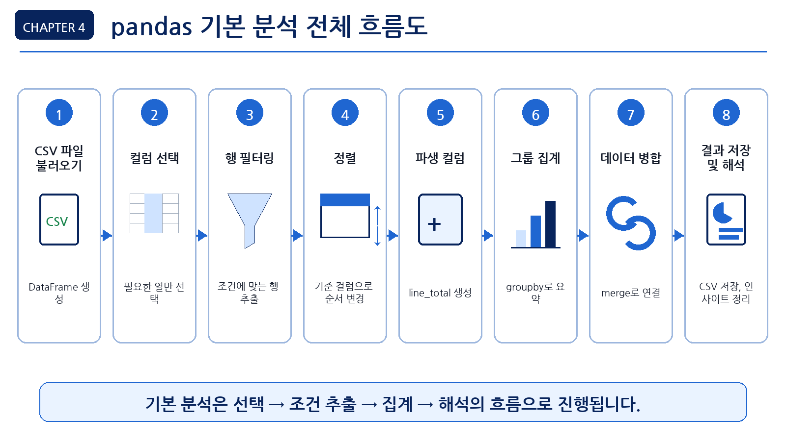
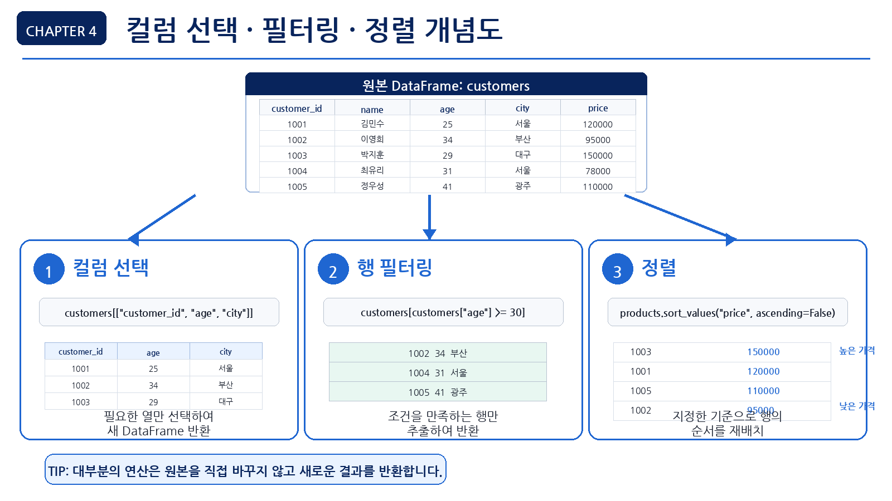
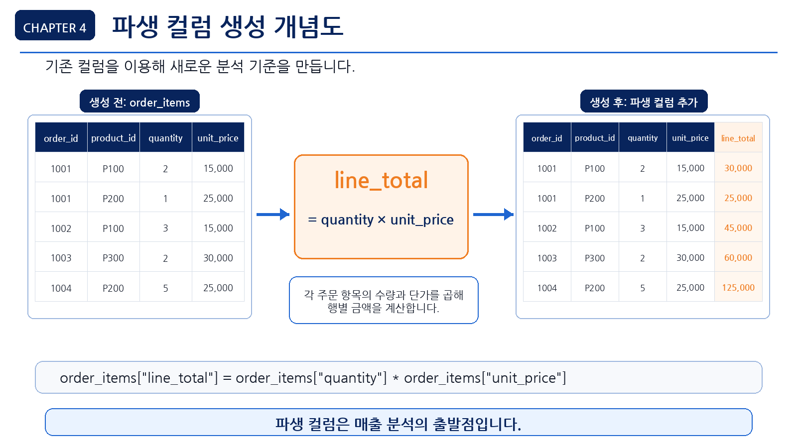
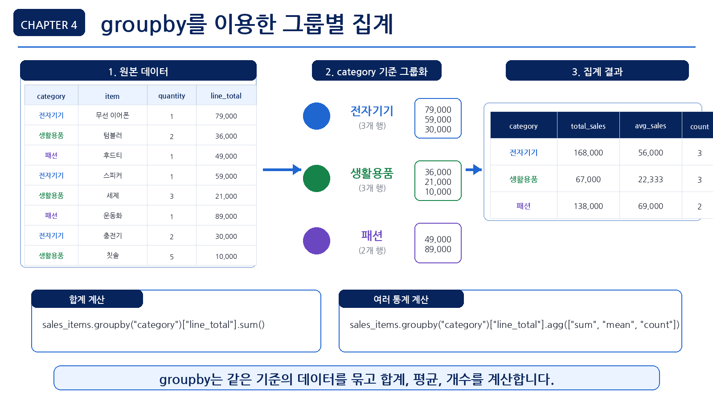
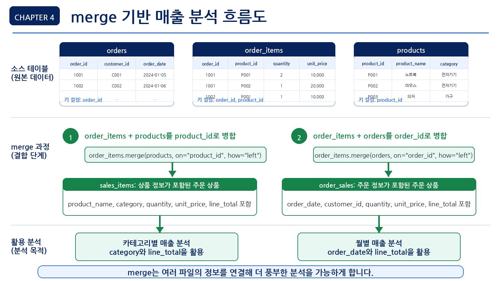

4장 pandas 기본 분석
이 장에서는 Chapter 3에서 불러온 온라인 쇼핑몰 데이터를 바탕으로 pandas의 기본 분석 기능을 실습합니다. Chapter 3에서는 데이터를 불러오고 구조를 확인하는 데 집중했다면, 이번 장에서는 데이터를 선택하고, 필터링하고, 정렬하고, 집계하면서 실제 분석 질문에 답하는 방법을 배웁니다.
데이터 분석에서 pandas는 가장 기본적이면서도 강력한 도구입니다. CSV 파일을 불러온 뒤 행과 열을 선택하고, 조건에 맞는 데이터를 추출하고, 그룹별로 합계나 평균을 계산하는 대부분의 작업을 pandas로 수행할 수 있습니다.
이번 장의 핵심은 복잡한 머신러닝 모델을 만드는 것이 아닙니다. 데이터에서 필요한 부분을 정확히 선택하고, 조건에 맞게 걸러내고, 그룹별로 요약하는 기본 분석 능력을 기르는 것입니다. 이 능력이 있어야 이후 시각화, 전처리, LLM 기반 분석, 보고서 자동화도 안정적으로 수행할 수 있습니다.
수업 시간 구성
| 구성 | 권장 시간 |
|---|---|
| pandas 기본 분석 개념 이해 | 30분 |
| 컬럼 선택과 행 필터링 실습 | 40분 |
| 정렬과 조건 조합 실습 | 35분 |
| 파생 컬럼 생성 실습 | 35분 |
| 그룹별 집계 실습 | 50분 |
| 파일 병합과 매출 분석 실습 | 50분 |
| LLM을 활용한 pandas 코드 검토 | 30분 |
| 연습 문제 및 심화 과제 | 60~90분 |
핵심 실습은 약 4시간을 기준으로 구성되어 있습니다. 추가 실습과 심화 과제까지 포함하면 최대 5시간 분량으로 확장할 수 있습니다.
1. 학습 목표
이 장을 마치면 학습자는 다음을 할 수 있습니다.
- pandas DataFrame에서 필요한 컬럼을 선택할 수 있습니다.
- 조건에 맞는 행을 필터링할 수 있습니다.
- 여러 조건을 조합해 데이터를 추출할 수 있습니다.
- 데이터를 특정 컬럼 기준으로 정렬할 수 있습니다.
- 기존 컬럼을 활용해 새로운 파생 컬럼을 만들 수 있습니다.
value_counts()로 범주형 데이터의 빈도를 확인할 수 있습니다.groupby()를 사용해 그룹별 합계, 평균, 개수를 계산할 수 있습니다.merge()를 사용해 여러 CSV 파일을 연결할 수 있습니다.- 주문 상세 데이터와 상품 데이터를 연결해 상품·카테고리별 매출을 계산할 수 있습니다.
- LLM이 작성한 pandas 코드를 실제 데이터 구조와 비교해 검증할 수 있습니다.
2. 이번 장에서 만들 결과물
이번 장에서는 pandas 기본 분석을 통해 온라인 쇼핑몰 데이터의 간단한 요약 결과를 만듭니다.
이번 장에서 만들 결과물은 다음과 같습니다.
- 고객 데이터에서 필요한 컬럼만 선택한 결과
- 조건에 맞는 고객·주문 데이터 필터링 결과
- 상품 가격 기준 정렬 결과
- 주문 상세 데이터의
line_total파생 컬럼 - 상품 카테고리별 매출 요약표
- 주문 상태별 주문 수 요약표
- 고객별 주문 횟수와 구매 금액 요약표
- 월별 매출 요약표
- pandas 기본 분석 체크리스트
- LLM 코드 검토 프롬프트와 검증 결과
이 장에서 필요한 그림과 화면 예시는 각 개념이 등장하는 위치에 함께 배치합니다.

3. 핵심 개념
3.1 pandas 기본 분석이란 무엇인가
pandas 기본 분석은 DataFrame에서 필요한 데이터를 선택하고, 조건에 맞게 걸러내고, 기준별로 요약하는 작업입니다.
실무 데이터 분석에서 자주 사용하는 pandas 기본 분석 작업은 다음과 같습니다.
| 작업 | pandas 기능 | 예시 |
|---|---|---|
| 컬럼 선택 | df["컬럼명"], df[[...]] | 고객 ID와 나이만 선택 |
| 행 필터링 | 조건식 | 30대 이상 고객만 추출 |
| 정렬 | sort_values() | 가격이 높은 상품순 정렬 |
| 파생 컬럼 생성 | 새 컬럼 대입 | 수량 × 단가로 매출 계산 |
| 빈도 확인 | value_counts() | 지역별 고객 수 확인 |
| 그룹 집계 | groupby() | 카테고리별 매출 합계 |
| 파일 연결 | merge() | 주문 상세와 상품 데이터 연결 |
| 결과 저장 | to_csv() | 분석 요약 결과 CSV 저장 |
이 장에서는 위 기능을 온라인 쇼핑몰 데이터에 적용합니다.
3.2 컬럼 선택이란 무엇인가
컬럼 선택은 DataFrame에서 분석에 필요한 열만 가져오는 작업입니다. 모든 컬럼을 한꺼번에 볼 수도 있지만, 분석 목적에 따라 필요한 컬럼만 선택하면 데이터가 훨씬 읽기 쉬워집니다.
예를 들어 고객 분석에서 처음부터 고객 이름까지 모두 필요하지 않을 수 있습니다. 연령, 성별, 지역만 보고 싶다면 해당 컬럼만 선택하면 됩니다.
customers[["customer_id", "gender", "age", "city"]]컬럼 선택은 단순해 보이지만 매우 중요합니다. LLM이 작성한 코드에서 실제 존재하지 않는 컬럼명을 사용하면 오류가 발생하기 때문입니다. 따라서 분석 전에 항상 df.columns로 컬럼명을 확인해야 합니다.
3.3 행 필터링이란 무엇인가
행 필터링은 조건에 맞는 데이터만 추출하는 작업입니다.
예를 들어 다음과 같은 질문에 답할 때 사용합니다.
- 30세 이상 고객은 몇 명인가?
- 서울에 거주하는 고객은 누구인가?
- 완료된 주문만 분석하려면 어떻게 해야 하는가?
- 가격이 50,000원 이상인 상품은 무엇인가?
- 특정 카테고리 상품만 보고 싶다면 어떻게 해야 하는가?
pandas에서는 조건식을 사용해 행을 필터링합니다.
customers[customers["age"] >= 30]조건이 여러 개인 경우에는 &, |를 사용합니다.
| 연산자 | 의미 | 예시 |
|---|---|---|
& | 그리고 | 30세 이상이면서 서울 거주 |
| | 또는 | 서울 또는 부산 거주 |
~ | 아니다 | 완료 상태가 아닌 주문 |
조건식을 사용할 때는 각 조건을 괄호로 감싸는 습관을 들이는 것이 좋습니다.
customers[(customers["age"] >= 30) & (customers["city"] == "Seoul")]아래 그림은 pandas에서 컬럼 선택, 행 필터링, 정렬이 어떻게 다른 작업인지 비교해 보여줍니다.

3.4 정렬이란 무엇인가
정렬은 데이터를 특정 기준에 따라 오름차순 또는 내림차순으로 나열하는 작업입니다.
예를 들어 다음과 같은 질문에 답할 수 있습니다.
- 가격이 가장 높은 상품은 무엇인가?
- 가장 나이가 많은 고객은 누구인가?
- 가장 최근 주문은 언제인가?
- 구매 금액이 큰 고객은 누구인가?
pandas에서는 sort_values()를 사용합니다.
products.sort_values("price", ascending=False)ascending=False는 내림차순을 의미합니다. 가격, 매출, 주문 수처럼 큰 값을 먼저 보고 싶을 때 자주 사용합니다.
3.5 파생 컬럼이란 무엇인가
파생 컬럼은 기존 컬럼을 활용해 새로 만든 컬럼입니다.
예를 들어 주문 상세 데이터에 quantity와 unit_price가 있다면, 두 값을 곱해서 주문 상세 금액을 계산할 수 있습니다.
order_items["line_total"] = order_items["quantity"] * order_items["unit_price"]여기서 line_total은 새로 만든 파생 컬럼입니다.
파생 컬럼은 실무 분석에서 매우 자주 사용됩니다.
| 기존 컬럼 | 파생 컬럼 예시 | 의미 |
|---|---|---|
quantity, unit_price | line_total | 주문 상세 금액 |
order_date | order_month | 주문 월 |
age | age_group | 연령대 |
price | price_level | 가격대 |
order_status | is_completed | 완료 주문 여부 |
주문 상세 금액을 계산하는 line_total은 pandas 기본 분석에서 가장 자주 사용하는 파생 컬럼 예시입니다.

이번 장에서는 line_total과 order_month를 만듭니다. 연령대나 가격대 같은 파생 컬럼은 이후 전처리 장에서 더 자세히 다룹니다.
3.6 그룹별 집계란 무엇인가
그룹별 집계는 데이터를 특정 기준으로 묶고 합계, 평균, 개수 등을 계산하는 작업입니다.
예를 들어 다음과 같은 질문에 답할 수 있습니다.
- 상품 카테고리별 매출은 얼마인가?
- 지역별 고객 수는 몇 명인가?
- 주문 상태별 주문 수는 어떻게 되는가?
- 고객별 주문 횟수는 몇 회인가?
- 월별 매출은 어떻게 변하는가?
pandas에서는 groupby()를 사용합니다.
products.groupby("category")["price"].mean()그룹별 집계는 실무 데이터 분석에서 가장 많이 사용하는 기능 중 하나입니다.

3.7 merge란 무엇인가
merge()는 여러 DataFrame을 공통 컬럼을 기준으로 연결하는 기능입니다.
온라인 쇼핑몰 데이터는 하나의 파일만으로 충분히 분석하기 어렵습니다.
예를 들어 카테고리별 매출을 계산하려면 다음 두 파일을 연결해야 합니다.
order_items.csv: 주문별 상품, 수량, 단가products.csv: 상품명, 카테고리, 가격
order_items에는 product_id가 있고, products에도 product_id가 있습니다. 이 공통 컬럼을 기준으로 두 데이터를 연결할 수 있습니다.
order_items.merge(products, on="product_id", how="left")merge()를 사용할 때는 다음을 확인해야 합니다.
- 연결 기준 컬럼이 양쪽 데이터에 모두 있는가?
- 기준 컬럼의 값이 실제로 매칭되는가?
- 연결 후 행 수가 예상과 크게 달라지지 않는가?
- 같은 이름의 컬럼이 중복되지 않는가?
how="left"와how="inner"의 차이를 이해했는가?
아래 그림은 주문 상세 데이터, 상품 데이터, 주문 데이터를 병합해 매출 분석으로 이어지는 흐름을 보여줍니다.

이번 장에서는 기본적으로 how="left"를 사용합니다.
4. 실습 시나리오
이번 장의 실습 시나리오는 다음과 같습니다.
온라인 쇼핑몰 운영자가 고객, 상품, 주문 데이터를 바탕으로 기본 현황을 파악하려고 합니다. 복잡한 모델링이나 시각화 전에 pandas를 사용해 필요한 데이터만 선택하고, 조건에 맞는 데이터를 추출하고, 상품 카테고리별 매출과 월별 매출을 요약합니다.
이번 장에서 사용할 주요 분석 질문은 다음과 같습니다.
| 분석 질문 | 사용할 데이터 | pandas 기능 |
|---|---|---|
| 고객 데이터에서 필요한 컬럼만 보고 싶다 | customers | 컬럼 선택 |
| 30세 이상 고객만 확인하고 싶다 | customers | 필터링 |
| 가격이 높은 상품을 확인하고 싶다 | products | 정렬 |
| 주문 상세 금액을 계산하고 싶다 | order_items | 파생 컬럼 |
| 주문 상태별 주문 수를 알고 싶다 | orders | value_counts() |
| 상품 카테고리별 매출을 알고 싶다 | order_items, products | merge(), groupby() |
| 월별 매출을 알고 싶다 | orders, order_items | 날짜 변환, groupby() |
| 고객별 구매 금액을 알고 싶다 | customers, orders, order_items | merge(), groupby() |
이번 장의 실습 흐름은 다음과 같습니다.
- CSV 파일 4개 불러오기
- 필요한 컬럼 선택하기
- 조건에 맞는 행 필터링하기
- 상품 가격 기준으로 정렬하기
- 주문 상태별 주문 수 확인하기
- 주문 상세 금액 파생 컬럼 만들기
- 상품 데이터와 주문 상세 데이터 병합하기
- 카테고리별 매출 집계하기
- 주문 데이터와 주문 상세 데이터 병합하기
- 월별 매출 집계하기
- 고객별 구매 금액 집계하기
- 분석 결과를 CSV 파일로 저장하기
- LLM에게 코드 검토를 요청하고 사람이 검증하기
이 흐름은 컬럼 선택과 필터링으로 분석 대상을 좁히고, 파생 컬럼과 병합을 거쳐 그룹별 요약 결과를 만드는 순서로 진행됩니다.
5. 실습 코드
이번 장의 전체 실습은 다음 Notebook에서 진행합니다.
notebooks/ch04_pandas_basic.ipynb본문에는 핵심 코드만 제공합니다.
5.1 기본 패키지 불러오기
from pathlib import Path
import pandas as pd분석 결과를 저장할 폴더도 준비합니다.
report_dir = Path("reports")
report_dir.mkdir(exist_ok=True)Notebook을 notebooks 폴더 안에서 실행하는 경우에는 경로를 다음처럼 조정할 수 있습니다.
report_dir = Path("../reports")
report_dir.mkdir(exist_ok=True)5.2 데이터 파일 불러오기
먼저 데이터 폴더 경로를 설정합니다.
data_dir = Path("data/raw")파일을 찾지 못하면 다음 경로를 사용합니다.
data_dir = Path("../data/raw")CSV 파일 4개를 불러옵니다.
customers = pd.read_csv(data_dir / "customers.csv")
products = pd.read_csv(data_dir / "products.csv")
orders = pd.read_csv(data_dir / "orders.csv")
order_items = pd.read_csv(data_dir / "order_items.csv")각 데이터의 크기를 확인합니다.
print("customers:", customers.shape)
print("products:", products.shape)
print("orders:", orders.shape)
print("order_items:", order_items.shape)5.3 컬럼명 다시 확인하기
분석을 시작하기 전에 컬럼명을 다시 확인합니다.
print("customers:", list(customers.columns))
print("products:", list(products.columns))
print("orders:", list(orders.columns))
print("order_items:", list(order_items.columns))LLM이 작성한 코드를 사용할 때도 실제 컬럼명과 일치하는지 반드시 확인해야 합니다.
5.4 필요한 컬럼 선택하기
고객 데이터에서 분석에 필요한 컬럼만 선택합니다.
customer_basic = customers[["customer_id", "gender", "age", "city"]]
customer_basic.head()상품 데이터에서도 필요한 컬럼만 선택할 수 있습니다.
product_basic = products[["product_id", "product_name", "category", "price"]]
product_basic.head()컬럼을 하나만 선택하면 Series가 됩니다.
customers["city"].head()컬럼을 여러 개 선택하면 DataFrame이 됩니다.
customers[["city", "age"]].head()5.5 조건에 맞는 행 필터링하기
30세 이상 고객만 추출합니다.
customers_over_30 = customers[customers["age"] >= 30]
customers_over_30.head()30세 이상 고객 수를 확인합니다.
len(customers_over_30)서울에 거주하는 고객만 추출합니다.
seoul_customers = customers[customers["city"] == "Seoul"]
seoul_customers.head()도시명이 실제 데이터에서 영어인지 한글인지 확인이 필요합니다. 먼저 고유값을 확인하는 것이 좋습니다.
customers["city"].value_counts()5.6 여러 조건 조합하기
30세 이상이면서 서울에 거주하는 고객을 추출합니다.
target_customers = customers[
(customers["age"] >= 30) &
(customers["city"] == "Seoul")
]
target_customers.head()서울 또는 부산에 거주하는 고객을 추출합니다.
city_customers = customers[
(customers["city"] == "Seoul") |
(customers["city"] == "Busan")
]
city_customers.head()isin()을 사용하면 여러 값을 더 깔끔하게 조건으로 사용할 수 있습니다.
city_customers = customers[customers["city"].isin(["Seoul", "Busan"])]
city_customers.head()5.7 주문 상태별 데이터 확인하기
주문 상태별 주문 수를 확인합니다.
orders["order_status"].value_counts()완료된 주문만 추출합니다.
completed_orders = orders[orders["order_status"] == "completed"]
completed_orders.head()실제 데이터에서 주문 상태 값이 completed, Complete, 완료 등으로 다를 수 있습니다. 따라서 먼저 value_counts()로 실제 값을 확인한 뒤 필터링해야 합니다.
orders["order_status"].value_counts()5.8 정렬하기
상품 가격이 높은 순서대로 정렬합니다.
products.sort_values("price", ascending=False).head()상품 가격이 낮은 순서대로 정렬합니다.
products.sort_values("price", ascending=True).head()고객 나이가 많은 순서대로 정렬합니다.
customers.sort_values("age", ascending=False).head()정렬 결과를 변수에 저장할 수도 있습니다.
top_price_products = products.sort_values("price", ascending=False)
top_price_products.head()5.9 파생 컬럼 만들기: 주문 상세 금액
주문 상세 데이터에는 상품 수량과 단가가 있습니다. 두 값을 곱하면 주문 상세 금액을 계산할 수 있습니다.
order_items["line_total"] = order_items["quantity"] * order_items["unit_price"]
order_items.head()line_total 컬럼의 기본 통계를 확인합니다.
order_items["line_total"].describe()전체 주문 상세 금액 합계를 확인합니다.
total_sales = order_items["line_total"].sum()
total_sales이 값은 주문 상세 기준의 전체 매출 합계로 해석할 수 있습니다. 다만 취소 주문이나 환불 주문이 포함되어 있는지는 추가로 확인해야 합니다.
5.10 범주형 데이터 빈도 확인하기
고객 지역별 고객 수를 확인합니다.
customers["city"].value_counts()상품 카테고리별 상품 수를 확인합니다.
products["category"].value_counts()결제수단별 주문 수를 확인합니다.
orders["payment_method"].value_counts()value_counts(normalize=True)를 사용하면 비율을 확인할 수 있습니다.
orders["payment_method"].value_counts(normalize=True) * 1005.11 상품 데이터와 주문 상세 데이터 병합하기
카테고리별 매출을 계산하려면 order_items와 products를 연결해야 합니다.
먼저 두 데이터의 기준 컬럼을 확인합니다.
print(order_items.columns)
print(products.columns)두 데이터 모두 product_id를 가지고 있어야 합니다.
sales_items = order_items.merge(
products,
on="product_id",
how="left"
)
sales_items.head()병합 후 데이터 크기를 확인합니다.
print("병합 전 order_items:", order_items.shape)
print("병합 후 sales_items:", sales_items.shape)how="left"를 사용했기 때문에 행 수는 보통 order_items와 같아야 합니다. 행 수가 달라졌다면 기준 키 중복이나 매칭 문제를 확인해야 합니다.
5.12 병합 결과 검증하기
상품 정보가 연결되지 않은 행이 있는지 확인합니다.
sales_items["product_name"].isna().sum()카테고리가 비어 있는 행이 있는지도 확인합니다.
sales_items["category"].isna().sum()값이 0이면 모든 주문 상세 데이터가 상품 데이터와 정상적으로 연결된 것입니다.
5.13 카테고리별 매출 집계하기
카테고리별 매출 합계를 계산합니다.
category_sales = (
sales_items
.groupby("category", as_index=False)["line_total"]
.sum()
.sort_values("line_total", ascending=False)
)
category_sales컬럼명을 더 읽기 쉽게 바꿀 수 있습니다.
category_sales = category_sales.rename(columns={
"line_total": "total_sales"
})
category_sales카테고리별 매출 비중도 계산합니다.
category_sales["sales_ratio"] = (
category_sales["total_sales"] / category_sales["total_sales"].sum() * 100
)
category_sales5.14 상품별 매출 집계하기
상품별 매출을 계산합니다.
product_sales = (
sales_items
.groupby(["product_id", "product_name", "category"], as_index=False)
.agg(
total_quantity=("quantity", "sum"),
total_sales=("line_total", "sum")
)
.sort_values("total_sales", ascending=False)
)
product_sales.head(10)이 결과를 통해 어떤 상품이 가장 많이 팔렸는지, 어떤 상품이 매출에 크게 기여했는지 확인할 수 있습니다.
5.15 주문 데이터와 주문 상세 데이터 병합하기
월별 매출을 계산하려면 주문일 정보가 필요합니다. 주문일은 orders에 있고, 매출 금액은 order_items에 있습니다. 따라서 두 데이터를 order_id 기준으로 연결해야 합니다.
order_sales = order_items.merge(
orders,
on="order_id",
how="left"
)
order_sales.head()병합 결과를 확인합니다.
print("병합 전 order_items:", order_items.shape)
print("병합 후 order_sales:", order_sales.shape)how="left"는 왼쪽 데이터인 order_items의 행을 기준으로 유지하면서 orders의 주문 정보를 붙이는 방식입니다. inner는 양쪽에 모두 있는 키만 남기고, outer는 양쪽의 모든 키를 남기며, right는 오른쪽 데이터를 기준으로 유지합니다. 이번 실습에서는 주문 상세 행을 잃지 않는 것이 중요하므로 left를 사용합니다.
주문 정보가 연결되지 않은 행이 있는지 확인합니다.
order_sales["order_date"].isna().sum()5.16 날짜 컬럼 변환하기
order_date를 날짜 타입으로 변환합니다.
order_sales["order_date"] = pd.to_datetime(order_sales["order_date"], errors="coerce")날짜 변환 실패 건수를 확인합니다.
order_sales["order_date"].isna().sum()주문 월 컬럼을 만듭니다.
order_sales["order_month"] = order_sales["order_date"].dt.to_period("M").astype(str)
order_sales[["order_date", "order_month"]].head().dt는 날짜형 컬럼에서 연도, 월, 일 같은 날짜 속성을 꺼낼 때 사용하는 접근자입니다. to_period("M")은 날짜를 월 단위 기간으로 바꾸고, astype(str)은 이후 저장과 표시가 쉽도록 문자열로 변환합니다.
5.17 월별 매출 집계하기
월별 매출을 계산합니다.
monthly_sales = (
order_sales
.groupby("order_month", as_index=False)["line_total"]
.sum()
.rename(columns={"line_total": "total_sales"})
.sort_values("order_month")
)
monthly_sales월별 주문 수를 함께 계산하고 싶다면 다음처럼 작성할 수 있습니다.
monthly_summary = (
order_sales
.groupby("order_month", as_index=False)
.agg(
total_sales=("line_total", "sum"),
order_count=("order_id", "nunique")
)
.sort_values("order_month")
)
monthly_summaryagg(새컬럼명=(원본컬럼명, 집계함수)) 형식은 집계 결과 컬럼명을 직접 정하는 방법입니다. 여기서 order_count=("order_id", "nunique")는 주문 상세 행 수가 아니라 고유한 주문 건수를 계산하겠다는 뜻입니다. count()를 사용하면 한 주문에 여러 상품이 포함된 경우 주문 상세 행 수가 계산될 수 있습니다.
5.18 고객별 구매 금액 집계하기
고객별 구매 금액을 계산하려면 orders, order_items, customers를 연결해야 합니다.
먼저 주문 상세와 주문 데이터를 연결한 order_sales를 사용합니다.
customer_sales_base = order_sales.merge(
customers,
on="customer_id",
how="left"
)
customer_sales_base.head()고객별 구매 금액과 주문 횟수를 계산합니다.
customer_sales = (
customer_sales_base
.groupby(["customer_id", "name", "city"], as_index=False)
.agg(
order_count=("order_id", "nunique"),
total_sales=("line_total", "sum")
)
.sort_values("total_sales", ascending=False)
)
customer_sales.head(10)고객 단위 집계를 더 엄밀하게 하려면 먼저 customer_id만 기준으로 매출과 주문 수를 집계한 뒤, city나 name 같은 고객 속성을 나중에 병합하는 방식도 사용할 수 있습니다. 이번 샘플 데이터에서는 고객별 도시와 이름이 하나로 유지된다는 전제에서 함께 묶어 집계합니다.
이 결과는 우수 고객 분석의 기초 자료로 사용할 수 있습니다. 다만 이번 장에서는 고객 세분화까지 진행하지 않고, 기본 집계 결과를 확인하는 수준에서 마무리합니다.
5.19 분석 결과 저장하기
분석 결과를 CSV 파일로 저장합니다.
category_sales.to_csv(report_dir / "ch04_category_sales.csv", index=False)
product_sales.to_csv(report_dir / "ch04_product_sales.csv", index=False)
monthly_summary.to_csv(report_dir / "ch04_monthly_sales.csv", index=False)
customer_sales.to_csv(report_dir / "ch04_customer_sales.csv", index=False)Windows Excel에서 한글이 포함된 CSV를 바로 열 계획이라면 to_csv(..., encoding="utf-8-sig") 옵션을 사용할 수 있습니다. Python이나 Jupyter에서 다시 읽는 용도라면 기본 UTF-8 저장만으로도 충분합니다.
저장된 파일 목록을 확인합니다.
list(report_dir.glob("ch04_*.csv"))5.20 pandas 기본 분석 함수 만들기
반복되는 요약 작업을 함수로 만들 수 있습니다.
def summarize_dataframe(name, df):
print(f"===== {name} =====")
print("shape:", df.shape)
print("columns:", list(df.columns))
print("missing values:", df.isna().sum().sum())
print("duplicated rows:", df.duplicated().sum())여러 데이터셋에 적용합니다.
datasets = {
"customers": customers,
"products": products,
"orders": orders,
"order_items": order_items
}
for name, df in datasets.items():
summarize_dataframe(name, df)
print()이 함수는 Chapter 3의 데이터 구조 점검과 Chapter 4의 기본 분석을 연결하는 역할을 합니다.
6. LLM 활용 프롬프트
LLM은 pandas 코드 작성과 분석 아이디어 정리에 도움을 줄 수 있습니다. 하지만 LLM이 만든 코드는 실제 데이터 컬럼명, 데이터 타입, 파일 관계와 반드시 비교해야 합니다.
또한 실제 고객명, 이메일, 주문 상세 원본 데이터를 그대로 LLM에 입력하지 않는 것이 좋습니다. 가능하면 컬럼명, 데이터 크기, 요약 통계, 결측치 개수처럼 구조화된 요약 정보만 입력합니다.
6.1 pandas 필터링 코드 요청
당신은 Python 데이터 분석 수업의 실습 조교입니다.
다음 customers DataFrame에서 조건에 맞는 데이터를 필터링하는 pandas 코드를 작성해 주세요.
DataFrame 이름:
customers
컬럼:
- customer_id
- name
- gender
- age
- city
- signup_date
조건:
- age가 30 이상
- city가 Seoul 또는 Busan
초보자가 이해할 수 있도록 코드와 설명을 함께 작성해 주세요.
단, 실제 데이터가 아니라 컬럼 구조만 보고 작성해 주세요.6.2 groupby 집계 코드 요청
온라인 쇼핑몰 주문 상세 데이터에서 카테고리별 매출을 계산하려고 합니다.
DataFrame 정보:
- order_items: order_id, product_id, quantity, unit_price, line_total
- products: product_id, product_name, category, price
하고 싶은 작업:
1. product_id 기준으로 두 DataFrame 병합
2. category별 line_total 합계 계산
3. 매출이 큰 순서로 정렬
pandas 코드로 작성해 주세요.
각 단계마다 초보자용 설명을 주석으로 추가해 주세요.6.3 merge 코드 검토 요청
다음 pandas 코드가 안전한지 검토해 주세요.
sales_items = order_items.merge(products, on="product_id", how="left")
검토할 내용:
- 이 코드가 어떤 의미인지
- 실행 전 확인해야 할 컬럼
- 실행 후 확인해야 할 사항
- 병합 후 행 수가 달라질 때 의심할 수 있는 문제
- 초보자가 자주 하는 실수6.4 월별 매출 분석 코드 요청
orders와 order_items 데이터를 사용해 월별 매출을 계산하려고 합니다.
orders 컬럼:
- order_id
- customer_id
- order_date
- payment_method
- order_status
order_items 컬럼:
- order_item_id
- order_id
- product_id
- quantity
- unit_price
- line_total
요구사항:
1. order_id 기준으로 두 데이터를 병합
2. order_date를 날짜 타입으로 변환
3. order_month 컬럼 생성
4. 월별 total_sales와 order_count 계산
pandas 코드로 작성해 주세요.
단, 날짜 변환 실패 건수를 확인하는 코드도 포함해 주세요.6.5 LLM 코드 검증 요청
LLM이 다음 코드를 제안했습니다.
category_sales = order_items.groupby("category")["line_total"].sum()
이 코드가 현재 데이터 구조에서 바로 실행 가능한지 검토해 주세요.
현재 데이터 구조:
- order_items에는 order_id, product_id, quantity, unit_price, line_total이 있습니다.
- products에는 product_id, product_name, category, price가 있습니다.
문제점이 있다면 왜 문제가 되는지 설명하고,
올바른 분석 흐름과 수정 코드를 제안해 주세요.6.6 분석 결과 해석 요청
다음은 카테고리별 매출 분석 결과입니다.
category,total_sales,sales_ratio
전자기기,12500000,42.5
생활용품,7800000,26.5
패션,6200000,21.1
식품,2900000,9.9
이 결과를 초보자도 이해할 수 있도록 해석해 주세요.
단, 다음 조건을 지켜 주세요.
- 데이터에 없는 내용을 추측하지 말 것
- 원인 분석은 가설로 표현할 것
- 추가로 확인해야 할 데이터 항목을 제안할 것
- 보고서에 넣을 수 있는 문장으로 정리할 것7. 결과 해석
이번 장의 결과는 최종 인사이트라기보다 pandas 기본 분석을 통해 만든 기초 요약 결과입니다.
7.1 필터링 결과 해석
30세 이상 고객을 필터링했다면 결과는 다음처럼 해석할 수 있습니다.
전체 고객 중 30세 이상 고객만 추출한 결과입니다.
이 결과는 연령대별 고객 분석이나 특정 고객군 분석의 기초 자료로 사용할 수 있습니다.하지만 여기서 바로 “30세 이상 고객이 더 중요한 고객이다”라고 결론 내리면 안 됩니다. 구매 금액, 주문 횟수, 가입 기간 등을 함께 확인해야 합니다.
7.2 정렬 결과 해석
가격이 높은 상품을 정렬하면 고가 상품 목록을 확인할 수 있습니다.
상품 가격이 높은 순서로 정렬한 결과입니다.
이 결과는 고가 상품군을 확인하는 데 유용하지만, 실제 매출 기여도를 판단하려면 판매 수량과 주문 데이터를 함께 분석해야 합니다.가격이 높다고 해서 반드시 매출이 높은 것은 아닙니다. 판매 수량이 적으면 매출 기여도는 낮을 수 있습니다.
7.3 파생 컬럼 결과 해석
line_total은 주문 상세 한 줄의 금액을 의미합니다.
line_total은 quantity와 unit_price를 곱해 만든 주문 상세 금액입니다.
이 컬럼을 기준으로 전체 매출, 상품별 매출, 카테고리별 매출을 계산할 수 있습니다.단, 취소 주문이나 환불 주문이 포함되어 있다면 실제 매출과 다를 수 있습니다. 따라서 주문 상태를 함께 확인해야 합니다.
7.4 카테고리별 매출 해석
카테고리별 매출 결과는 어떤 상품군이 매출에 많이 기여했는지 보여줍니다.
예를 들어 전자기기 카테고리의 매출 비중이 가장 높다면 다음처럼 해석할 수 있습니다.
전자기기 카테고리의 매출 비중이 가장 높게 나타났습니다.
다만 이 결과가 판매 수량 때문인지, 상품 단가가 높기 때문인지는 추가 분석이 필요합니다.이처럼 결과 해석에서는 “무엇이 높다”는 사실과 “왜 높은지”에 대한 가설을 구분해야 합니다.
7.5 월별 매출 해석
월별 매출은 시간에 따른 매출 흐름을 확인하는 데 사용합니다.
월별 매출 요약 결과를 통해 특정 월의 매출 증가 또는 감소를 확인할 수 있습니다.
다만 매출 변화의 원인을 설명하려면 프로모션, 신규 상품 출시, 계절성, 주문 수 변화 등을 추가로 확인해야 합니다.이번 장에서는 월별 매출을 표로 요약하는 수준까지 진행합니다. 그래프를 통한 추세 분석은 이후 시각화 장에서 다룹니다.
7.6 고객별 구매 금액 해석
고객별 구매 금액은 우수 고객 분석의 기초가 됩니다.
고객별 총 구매 금액을 계산하면 구매 금액이 높은 고객을 확인할 수 있습니다.
다만 일회성 고액 구매 고객과 반복 구매 고객은 구분해서 해석해야 합니다.따라서 고객별 구매 금액만 보는 것보다 주문 횟수와 함께 보는 것이 좋습니다.
8. 실무 적용 포인트
실무에서 pandas 기본 분석은 거의 모든 분석 프로젝트의 출발점입니다. 데이터가 크거나 복잡해도 기본은 같습니다.
실무에서 자주 사용하는 흐름은 다음과 같습니다.
- 필요한 컬럼만 선택합니다.
- 분석 대상 조건을 정합니다.
- 조건에 맞는 행만 필터링합니다.
- 필요한 파생 컬럼을 만듭니다.
- 기준 컬럼으로 데이터를 병합합니다.
- 그룹별 합계, 평균, 개수를 계산합니다.
- 결과를 정렬합니다.
- 이상한 값이나 누락된 값을 확인합니다.
- 결과를 CSV 또는 보고서로 저장합니다.
- 결과 해석은 데이터에 근거해 신중하게 작성합니다.
pandas 기본 분석 체크리스트
| 점검 항목 | 확인 |
|---|---|
| 실제 컬럼명을 확인했는가? | □ |
| 필요한 컬럼만 선택했는가? | □ |
| 필터링 조건을 괄호로 명확히 작성했는가? | □ |
| 문자열 값의 실제 표기를 확인했는가? | □ |
| 정렬 기준과 오름차순/내림차순을 확인했는가? | □ |
| 파생 컬럼 계산식이 맞는가? | □ |
groupby() 기준 컬럼이 적절한가? | □ |
| 집계 함수가 분석 목적에 맞는가? | □ |
merge() 기준 컬럼이 양쪽 데이터에 모두 있는가? | □ |
merge() 후 행 수와 결측치를 확인했는가? | □ |
| 날짜 컬럼을 안전하게 변환했는가? | □ |
| LLM이 만든 코드가 실제 데이터 구조와 일치하는가? | □ |
| 분석 결과를 과장해서 해석하지 않았는가? | □ |
| 결과 파일을 적절한 폴더에 저장했는가? | □ |
9. 연습 문제
기본 연습 문제
customers.csv,products.csv,orders.csv,order_items.csv를 pandas로 불러오세요.- 제출 형식: 코드와 실행 결과
- 포함 항목:
pd.read_csv(),shape
- 고객 데이터에서
customer_id,gender,age,city컬럼만 선택하세요.- 제출 형식: 코드와
head()결과 - 포함 항목: 컬럼 선택 코드
- 제출 형식: 코드와
- 30세 이상 고객만 필터링하세요.
- 제출 형식: 코드와 결과 행 개수
- 포함 항목: 조건 필터링
- 상품 데이터를 가격이 높은 순서로 정렬하세요.
- 제출 형식: 상위 10개 상품 출력 결과
- 포함 항목:
sort_values()
- 주문 상세 데이터에
line_total컬럼을 생성하세요.- 제출 형식: 코드와
head()결과 - 포함 항목:
quantity * unit_price
- 제출 형식: 코드와
- 주문 상태별 주문 수를 확인하세요.
- 제출 형식: 코드와 출력 결과
- 포함 항목:
value_counts()
- 상품 데이터와 주문 상세 데이터를 병합한 뒤 카테고리별 매출을 계산하세요.
- 제출 형식: 코드와 카테고리별 매출표
- 포함 항목:
merge(),groupby(),sum()
심화 과제
- 월별 매출 요약표를 작성하세요.
- 제출 형식: DataFrame 출력 결과와 CSV 저장 파일
- 포함 항목:
pd.to_datetime(),order_month,groupby()
- 고객별 구매 금액과 주문 횟수를 계산하세요.
- 제출 형식: 상위 10명 고객 요약표
- 포함 항목:
merge(),nunique(),sum()
- LLM에게 카테고리별 매출 분석 코드를 작성하게 한 뒤, 실제 데이터 구조와 맞지 않는 부분을 검토하세요.
- 제출 형식: 프롬프트, LLM 답변 요약, 수정한 코드, 검증 결과
- Chapter 4 분석 결과 파일을
reports/폴더에 저장하세요.- 제출 형식: 저장된 파일 목록
- 포함 파일 예시:
ch04_category_sales.csv,ch04_monthly_sales.csv,ch04_customer_sales.csv
10. 정리
이번 장에서는 pandas를 사용해 온라인 쇼핑몰 데이터의 기본 분석을 수행했습니다. Chapter 3에서 데이터 구조를 확인했다면, Chapter 4에서는 필요한 데이터를 선택하고, 조건에 맞게 필터링하고, 정렬하고, 그룹별로 집계하는 방법을 배웠습니다.
컬럼 선택은 분석에 필요한 정보만 가져오는 작업입니다. 행 필터링은 조건에 맞는 데이터만 추출하는 작업입니다. 정렬은 중요한 값을 빠르게 확인하는 데 유용합니다.
파생 컬럼은 기존 컬럼을 활용해 새로운 분석 기준을 만드는 방법입니다. 이번 장에서는 quantity와 unit_price를 곱해 line_total을 만들었습니다. 이 컬럼은 상품별 매출, 카테고리별 매출, 월별 매출, 고객별 구매 금액을 계산하는 기초가 됩니다.
groupby()는 그룹별 합계, 평균, 개수를 계산할 때 사용하는 핵심 기능입니다. 실무 데이터 분석에서 가장 자주 사용하는 pandas 기능 중 하나입니다.
merge()는 여러 CSV 파일을 공통 키 기준으로 연결할 때 사용합니다. 온라인 쇼핑몰 데이터처럼 고객, 주문, 상품, 주문 상세가 나뉘어 있는 경우에는 파일 간 관계를 이해하고 병합하는 능력이 매우 중요합니다.
LLM은 pandas 코드 작성에 도움을 줄 수 있지만, 실제 컬럼명과 파일 관계를 모르면 잘못된 코드를 제안할 수 있습니다. 따라서 LLM이 만든 코드는 반드시 사람이 직접 실행하고, 오류 여부와 분석 논리를 검증해야 합니다.
다음 장에서는 이번 장에서 만든 기본 분석 결과를 바탕으로 결측치, 중복값, 데이터 타입, 날짜, 문자열 표기 문제 등을 더 체계적으로 정리하는 데이터 전처리 과정을 다룹니다.